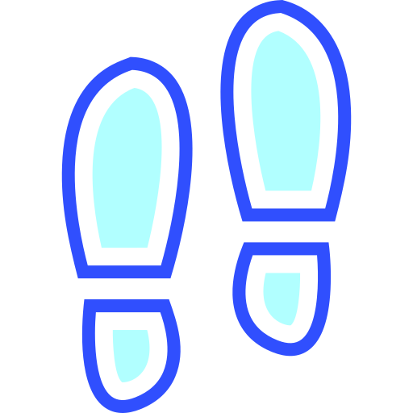

Resumo diário
Caminhada
Contagem de passos:
Distancia percorrida:
Calorias perdidas:

Alimentação
Caloria consumida:{{caloriaConsumuda}} kcal
Proteína consumida:{{proteinaConsumida}} g
Carboidrato consumido:{{carboidratoConsumido}} g
Gordura consumida:{{gorduraConsumida}} g
Fibra consumida:{{fibraConsumida}} g

Beba Água
Agua ingerida (litros):{{aguaConsumida}} L